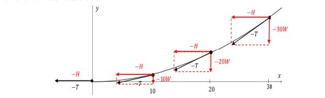
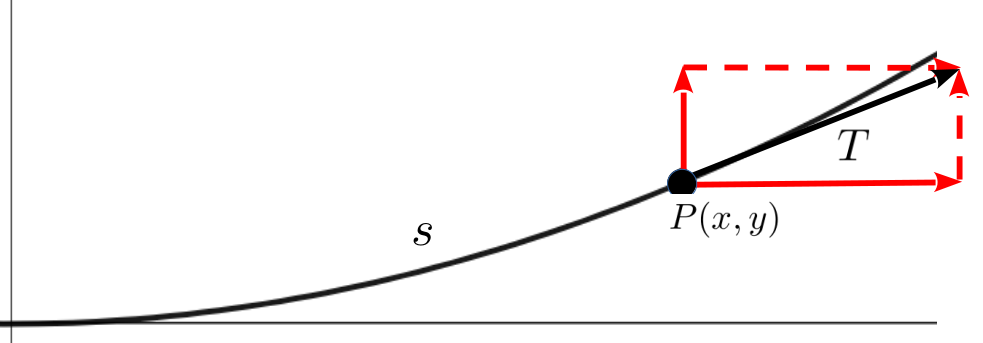

In the previous section all of the quantities we were looking at were time dependent they were in motion so it was useful to think of the derivative, \(\dfdx{y}{t}\text{,}\) as a velocity (fluxion). In other applications, where the quantities involved are not time dependent, the derivative is still a useful tool but thinking of it as a velocity may not be as useful.
For example, consider the shape of the support cable on a stable suspension bridge as seen in the picture below. The shape of the suspension cable appears to be parabolic, but how can we be sure of this?
At any given moment there are a lot of forces acting on a bridge, but most are insignificant most of the time. The mantra of mathematical modeling is to keep things as simple as possible (at least in the beginning) by focusing on the dominant parameter first.
We assume that the weight density of the deck of the bridge is \(W\) newtons per meter. (A newton is a unit of force named, obviously, after Isaac Newton. ) The cable adds to the weight of the bridge as well, but it is relatively small compared to the weight of the deck. So we will ignore it to keep the model simple. Assuming the deck is horizontal, we can take it to be the \(x\) axis
Now suppose the graph of \(y=y(x)\) represents the cable between two upright towers located at \(x=-U\) and \(x=U.\) Remember, though we suspect that \(y(x)\) is a parabola we dont yet know if this is true.
We choose an arbitrary point \((x,y)\) on the curve with \(0\lt x\lt U\) and focus on the portion of the bridge between \((-x,y)\) and \((x,y)\text{.}\)
These are the two points that are holding up the section of the bridge on the interval from \(-x\) to \(x\text{.}\) The arrows represent the tangential forces felt on the cable at the points.
Well examine the the horizontal and vertical components of the tangential force at various points on the bridge.

Since the curve is symmetric, we only draw the half where \(x\ge
0\text{.}\)
Notice the tangential force at \(x=0\text{,}\) which we have labeled \(-T\text{,}\) is horizontal. This reflects the fact that at that point the vertical force would be the weight for the deck from \(x=0\) to \(x=0\) which is zero (Youll see why we used negatives momentarily.) Hence the tangential force is equal to the horizontal tension, \(-H\text{.}\)
As we move away from the center of the cable to some point \(x_1\text{,}\) there is more of the deck to support. Since we are ignoring the weight of the cable, the vertical force is equal to the weight of the deck from \(x=0\) to \(x_1\) so the tangential tension gets larger as we move to the right. The horizontal tension at every single point will be the same as the tension at the origin. What varies is the vertical component of the force.
The cumulative effect can also be thought of this way. The point on the cable at \(x = 20\) meters must not only support the weight of the deck from \(x = 10\) meters to \(x = 20\) meters, but must bear the brunt of the load at the point \(x = 10\) meters as well. This leads to the vertical force at \(x
= 20\) meters being \(-10W \text{ newtons }- 10W \text{ newtons }= -20W\) newtons. The point at \(x = 30\) meters must support whatever weight there is at \(x = 20\) meters along with the extra weight from \(x
= 20\) meters to \(x = 30\) meters which totals \(-20W \text{ newtons }- 10W \text{
newtons }= -30W\) newtons. If you were hoisting a person carrying a bucket of sand, then you would be bearing the weight of both the person and the sand even though that person is only bearing the weight of the sand. This is the same idea.

The conclusion of this analysis is that at any point \((x, y)\) on the curve, the tangential force pulling against the cable has a horizontal component of \(-H\) and a vertical component of \(-Wx\text{.}\) To stabilize the bridge, we need the cable to be pulling with the same force in exactly the opposite direction. This leads to the sketch at the right. (Now you see why we used negatives before.)
Drill5.10.1.1.
(a)
Use the above analysis and schematic drawing of the forces involved to show that the curve representing the cable must satisfy the differential equation
Notice that \(T\) is pulling in the direction tangent to the cable.
(b)
Show that the parabola \(y=\frac{W}{2H} x^2+b,\) where \(b\) is an arbitrary constant, satisfies this differential equation
(c)
Let \(W = 1\text{,}\)\(b = 0\) and plot the parabola for \(H = 1, 2,
3\text{.}\) Does this agree with the idea that \(H\) indicates how tightly we are winching the cable?
With our simplifying assumptions in place it appears that the cable on a suspension bridge does indeed hang in the shape of a parabola. But the suspension bridge has to hold up the deck beneath it. After all, that is its purpose.
Subsection5.10.2Chains
What shape do you think a chain takes on if it is pinned at both ends, and allowed to hang freely in between? Take your best guess and dont worry about guessing correctly. Well solve this problem shortly.
If you guessed that the curve is a parabola, then you are in good company. Galileo also believed that a hanging chain assumed a parabolic shape as we see in the following passage from his book Dialogue Concerning Two New Sciences32
Drive two nails into a wall at a convenient height and at the same level; make the distance between these nails twice the width of the rectangle upon which it is desired to trace the semiparabola. Over these two nails hang a light chain of such length that the depth of its sag (curve or sacca) is equal to the length of the prism. This chain will assume the form of a parabola, so that if this form be marked by points on the wall we shall have described a complete parabola which can be divided into two equal parts by drawing a vertical line through a point midway between the two nails . . . Any ordinary mechanic will know how to do it.
Drill5.10.2.1.The Hanging Chain.
This problem is very similar to finding the shape of the suspension bridge cable. The difference here is that since there is no deck to support, the only vertical force will be the weight of the chain itself, so we cant ignore the weight of the chain the way we ignored the weight of the cable in the suspension bridge.
Let \(w\) represent the weight density of the chain in newtons per meter and \(s\) represent the length of the chain from the lowest point to a point \(P=(x,y)\) on the chain. Show that the curve represented by the chain must satisfy the differential equation
OK, but so what? All equation(5.10)) says is that the proportion \(\dfdx{y}{x}\) is equal to the proportion \(\frac{ws}{H}\text{.}\)
If we could solve this equation for \(y(x)\) then the graph of \(y\) would be the shape of the chain, but sadly we dont have the tools to do that (yet).
So why did we bother writing down equation(5.10)) at all? Does this tell us anything about the shape of the hanging chain?
Yes. Actually it does.
The fact is that in our attempts to describe the world around us using mathematics we cant actually solve most of the equations we write down. Real world phenomena are just too complex. But just writing them down is a step forward. Although we cant (yet) solve equation(5.10)), and thereby find the shape of a hanging chain, we can use it to eliminate some shapes. In particular, we can now show that Galileo was wrong about the shape of a hanging chain.
Problem5.10.2.2.
The difficulty is that we have the wrong variable on the right side of (5.10). Since \(y\) depends on \(x\) wed like to have only the variables \(x\) and \(y\text{,}\) appearing in our equation. Instead we have \(x\text{,}\)\(y\text{,}\) and \(s\text{.}\) And we really dont know anything about \(s\text{.}\) However, recall that we do know something about \(\dx{s}\text{.}\)
(a)
Use a differential triangle to show that the hanging chain curve must satisfy the differential equation
Recall that \(\dx{s}\) represents a differential along the direction of the curve. How is it related to \(\dx{x}\) and \(\dx{y}\text{?}\)
(b)
Show that the general parabola \(y=ax^2+bx+c\) does not satisfy this differential equation (and so Galileo was mistaken!) .
(c)
Show that, in fact no nonzero polynomial \(y=a_0+a_1x+a_2x^2+\ldots+a_nx^n\) satisfies equation(5.11).
Hint.
Suppose it did satisfy the equation. If we were to square both sides of the equation, what would the degree of each side be?
Galileos brilliance is not at all diminished by this error. As we said in Chapter2, smart people make mistakes! This is how they get to be smart. You should follow the example of Galileo (and Newton, and Leibniz) by making and embracing lots of mistakes. But dont forget to learn from them as well. Also, in fairness to Galileo, he did not have access to the Calculus tools that make this problem tractable. We do.
Subsection5.10.3Domes
In Problem5.10.2.2 we saw that the shape of a hanging chain is not a parabola as Galileo believed. But it actually shows much more than that. It shows that the shape of a hanging chain is not the graph of any polynomial regardless of its degree. (A parabola is the graph of a polynomial of degree \(2\text{.}\)) This result tell us that the set of polynomials is too small to model all of the phenomena we observe in the world. The solution of the hanging chain problem will require a larger class of functions.
The curve which does satisfy equation(5.10)), and thus is the shape of a hanging chain is called the catenary. This is not especially illuminating since the word catenary is derived from the Latin word {\it catena} which simply means chain.
The structural properties of the catenary have been known and used since ancient times The Pantheon in Rome was completed during the reign of Hadrian and dedicated around \(126\) AD. It is not known who designed it, but there is evidence which suggests that a catenary design was employed.
A number of modern architects and masons have used the catenary to design arches and domes (a rotated arch) as well. For example, the mathematician and architect Sir Christopher Wren36
(16351703), who advised him that the cross section of the dome should be an inverted catenary: As hangs a flexible cable so, inverted, stand the touching pieces of an arch.
Hooke is also famous for showing that the contracting force of a stretched spring is proportional to the amount of stretching. This is known as Hookes Law. We will examine this in more depth in Subsection6.2.5.
Subsection5.10.4Telescopes
Though he didnt invent the telescope, Galileo is usually cited as the first person to use a telescope to discover, for example, craters and mountains on the surface of the Moon, the phases of Venus, and the moons of Jupiter. This work helped convince Galileo of the validity of Nicolaus Copernicus39
heliocentric (sun-centered) model of the solar system, for which he (Galileo) was eventually condemned by the Inquisition. The Englilshman Thomas Harriot40
did it before Galileo but Harriot didnt publish his observations.
All telescopes follow one of two basic designs, refractive and reflective. Refractive telescopes us the refractive property of light described by Snells Law (see Section3.7) to reduce the large image entering the telescope to a smaller area, thus focusing the image for the observer. Galileo used a refractive telescope
Refractive telescopes work well for relatively close objects, but since refraction separates light into its various color components (think of light passing through a prism) it tends to create little rainbows (usually called chromatic aberrations) in the image.
Because of his work in optics, Newton realized that he could use the reflective properties of the parabola to achieve greater magnification with a smaller physical device while simultaneously avoiding the chromatic aberrations. All modern research telescopes are built on Newtons original design, which uses parabolic mirrors to reflect light toward the focus of the parabola, where a secondary mirror reflects it to the eyepiece.
For example, each mirror of the two large mirrors required by the Large Binocular Telescope at Mt. Graham, Arizona is \(8.4\) meters in diameter. The image below gives a sense of the size of one of these mirrors.
uses a process called spin casting, where high quality borosilicate glass is place into a revolving furnace. As the furnace spins the glass liquefies and the rotational forces push the surface of the glass into a parabolic shape.
As the molten glass spins the middle goes down and the sides go up. As we will see momentarily the surface generated must be a parabola. The shape of the mirror, and hence its focal length, will be affected by the rotational speed of the glass. The question is, how fast must we spin the furnace to produce a particular focal length?
To begin to answer that question we will need to think about a typical point mass at a point on the surface of the molten glass as shown below. Suppose the glass is spinning at an angular velocity of \(\omega\frac{\text{radians}}{\text{second}}\text{.}\) Our task is to find the function \(y=y(x)\) whose graph is the shape of a cross-section of the surface of the liquid glass.
The red arrow in the diagram depicts the force keeping the point mass elevated and spinning in a circle. It will be perpendicular to the surface of the liquid, as shown. (Think about a hose with a hole in it. The water sprays out in a stream perpendicular to the hose.)
If we separate that force into its vertical and horizontal components, as shown in the diagram, the magnitude of the vertical component of the force is \(mg\text{,}\) where \(g\) is the acceleration due to gravity. This is the force needed to counter the weight of the particle.
Problem5.10.4.2.
The only horizontal force is the centripetal force due to the spinning of the furnace, which is \(mx\omega^2\text{.}\) We will derive this formula analytically in Chapter6 when we have extended the scope of our differentiation rules. For now assume this is correct and proceed.
(a)
Use the diagram above to show that the curve \(y=y(x)\) must satisfy the differential equation
The slope of the line tangent to the parabola at \((x,y)\) will be \(\dfdx{y}{x}\text{.}\) This will be perpendicular to the force acting at that point, represented by the red arrow.
(b)
Show that \(y(x)\) must be a parabola to satisfy this differential equation.
(c)
Using the value \(g=9.8\frac{\text{meters}}{\text{second}^2}\text{,}\) graph the parabola from part (b). for \(\omega =1, 2, 3\text{.}\) Do these graphs coincide with your intuition about what should happen as the liquid rotates faster?
In antiquity the reflective properties of all of the conic sections (parabola, ellipse and hyperbola) were worked out via very laborious geometric arguments. In Chapter3 we saw that Roberval reestablished these properties using his more dynamic (if somewhat questionable) approach. The next two problems will reestablish the reflective property of the parabola once more using a combination of Geometry and Calculus.
Recall from Chapter3 that any light ray parallel to the axis of a parabola will reflect to a single point (the focus of the parabola).
Drill5.10.4.3.
A parabola may be defined geometrically as the set of points equidistant from a given point, the focus, and a given line, the directrix as shown below. Suppose that the point \((x,y)\) lies on the parabola with focus \(F=(0,p)\) and directrix \(y=-p\) as in the diagram at the right.
(a)
Show that \((x,y)\) must satisfy the equation: \(x^2=4py.\)
(b)
In Problem5.10.4.2, show that in order to spin a mirror with a focus43
Having the correct focus (and thus the correct focal length) is of paramount importance in the performance of the telescope. To give you a notion of the precision required, it took \(3\) months to polish the surface of one of the primary mirrors in the Large Binocular Telescope to a precision of \(30\) nanometers (\(3,000\) times thinner than a human hair).
at \((0,p)\) the angular velocity must be \(\omega =\sqrt{\frac{g}{2p}}\text{.}\)
Drill5.10.4.4.
Consider the parabola with equation \(y=\frac{x^2}{4p}\) focus \(F=(0,p)\text{,}\) and directrix \(y=-p\) as in Drill5.10.4.3.
(a)
Show that the tangent line (in red) is perpendicular to line segment \(FQ\text{.}\)